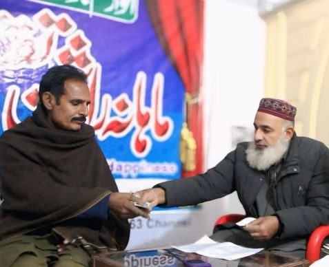
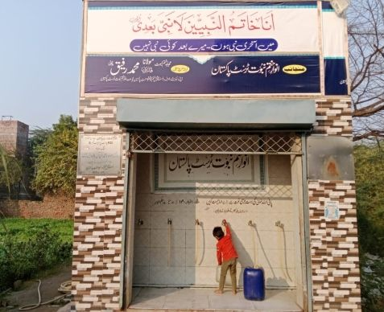
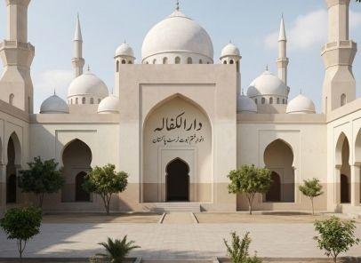
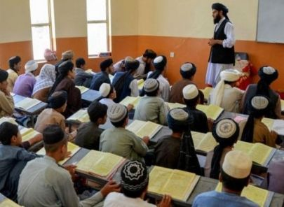

خدمت کے تیرہ شعبے
اے کے این ٹرسٹ کا ہر شعبہ ایک ہی مقصد کے لیے قائم ہے: ایمان کا تحفظ اور عزتِ نفس کی بحالی — نبوی طریق پر دعوت سے لے کر راشن، پانی، مکانات، مکاتب اور نکاح تک، نو مسلمین، بیواؤں اور یتیموں کو اوّلیت کے ساتھ۔
شعبہ منتخب کیجیے
دعوتِ اسلام
اخلاص کے ساتھ نبوی طریق پر دعوت۔
پڑھیے ←تقسیمِ راشن
ماہانہ پروگرام — اب تک 90,000+ افراد تک رسائی۔
پڑھیے ←ماہانہ وظائف
بیواؤں، یتیموں اور غریبوں کے لیے نقد وظائف۔
پڑھیے ←روزگار
رکشے، سلائی مشینیں اور قرضِ حسنہ۔
پڑھیے ←فراہمیٔ آب
تھر سے پنجاب تک کنویں، پمپ اور فلٹریشن۔
پڑھیے ←قرآنی مکاتب
پنجاب، لاہور اور اندرونِ سندھ میں مکاتب۔
پڑھیے ←نکاح
نو مسلم بیٹیوں کے نکاح، پورے وقار کے ساتھ۔
پڑھیے ←دارالکفالہ
لاہور میں نو مسلمین کے لیے مفت رہائش۔
پڑھیے ←عصری و فنی تعلیم
فیسیں، یونیفارم، آئی ٹی کورسز اور 300 بچوں کا سکول۔
پڑھیے ←اپنا گھر اپنی جنت
ملکیتی حقوق کے ساتھ مکانات اور کرایہ معاونت۔
پڑھیے ←ختم نبوت کورسز
مختصر کورسز سے دو ماہ کے مینجمنٹ کورس تک۔
پڑھیے ←نشر و اشاعت
ماہنامہ، لٹریچر اور AKN63Channel۔
پڑھیے ←قبولِ اسلام
اسلام قبول کرنے والوں کی رپورٹ۔
پڑھیے ← شعبہ 01
شعبہ 01
نبوی طریق پر دعوت
ٹرسٹ اخلاص کے ساتھ، نبی کریم ﷺ کے طریق پر دعوت کا کام کرتا ہے۔ انہی کوششوں سے سینکڑوں قادیانیوں نے اسلام قبول کیا — جن میں موجودہ قادیانی سربراہ مرزا مسرور کا رضاعی بھتیجا شمس الدین؛ سابق مربی عامر منیر، نذیر احمد اور شاہد احمد؛ سابق مفتی محمد احمد؛ اور مرزا خاندان کے کئی افراد شامل ہیں۔
اس کے ساتھ ساتھ ہزاروں مسلمانوں کے شکوک و شبہات کا ازالہ کیا گیا ہے۔
ماہانہ راشن — اب تک 90,000+ افراد
ماہانہ راشن پروگرام کے تحت اب تک تقریباً 90,000+ افراد تک راشن پہنچ چکا ہے، جس میں نو مسلمین، ضرورت مندوں، بیواؤں اور یتیموں کو اوّلیت دی جاتی ہے۔ ایک خاندان کے پیکج کی لاگت ₨ 6,000 ہے — ایک گھرانے کے لیے پورے مہینے کی خوراک۔
 شعبہ 02
شعبہ 02

شعبہ 03مستحقین کے لیے نقد وظائف
چناب نگر کی بیواؤں، یتیموں اور غریب خواتین کو ٹرسٹ کی جانب سے باقاعدہ نقد وظائف ملتے ہیں — جو انہیں قادیانی استحصال سے محفوظ رکھتے ہیں اور ایک باوقار، قابلِ اعتماد آمدنی فراہم کرتے ہیں۔
بائیکاٹ کے مقابلے میں روزگار
نو مسلمین کو اکثر سماجی بائیکاٹ کا سامنا کرنا پڑتا ہے۔ ٹرسٹ اس کا جواب روزگار سے دیتا ہے: نوجوانوں کے لیے رکشے، بیواؤں کے لیے سلائی مشینیں، تعلیم یافتہ نو مسلمین کے لیے نجی شعبے میں ملازمتوں کی معاونت، اور کاروبار شروع کرنے کے لیے قرضِ حسنہ (بلا سود قرض)۔
 شعبہ 04
شعبہ 04

شعبہ 05تھر سے پنجاب تک صاف پانی
اندرونِ سندھ — تھرپارکر کے مٹھی، کھوکھراپار، ننگرپار اور اسلام کوٹ — میں کنویں، صحرائی کنوؤں کے لیے بجلی کے پمپ؛ چناب نگر کے 20 گھروں میں ہینڈ پمپ؛ اور پنجاب میں لاکھوں روپے مالیت کے واٹر فلٹریشن پلانٹس، جن سے ہزاروں افراد مستفید ہو رہے ہیں۔
ہر بچے کے ہاتھ میں قرآن
لاہور، چناب نگر، پنجاب کے دیگر علاقوں اور اندرونِ سندھ میں مکاتب قائم ہیں، جہاں سینکڑوں بچے قرآنی تعلیم مکمل کر چکے ہیں — اور ہر سبق میں عقیدے کا تحفظ شامل ہے۔
 شعبہ 06
شعبہ 06
نئے گھر، وقار کی بنیاد پر
ٹرسٹ نو مسلم بیٹیوں کے نکاح کا اہتمام کرتا ہے اور انہیں سماجی تنہائی سے محفوظ رکھتا ہے؛ نو مسلم مردوں اور خواتین کے لیے رشتے تلاش کرتا ہے؛ اور ازدواجی زندگی میں جوڑوں کی معاونت جاری رکھتا ہے۔
لاہور میں نو مسلمین کے لیے چھت
راجگڑھ لاہور میں مرکزی دفتر کے ساتھ تقریباً ₨ 1 کروڑ کی لاگت سے تعمیر شدہ دو منزلہ رہائشی عمارت، جہاں نو مسلمین کو مفت رہائش دی جاتی ہے۔ مزید 8 فلیٹس کا منصوبہ ہے۔

شعبہ 08سکول کی فیس سے فری لانسنگ تک
ٹرسٹ نو مسلم طلبہ کے سکول، کالج اور یونیورسٹی کے اخراجات — فیس، یونیفارم اور کاپی کتابیں — اٹھاتا ہے۔ احمد نگر (ضلع چنیوٹ) میں تقریباً 300 بچوں کے لیے سکول زیرِ تکمیل ہے، اور ختم نبوت آفس راجگڑھ میں کالج کا منصوبہ ہے۔
نو مسلمین اور غریبوں کے لیے فنی تربیت میں الیکٹریشن اور پلمبر کے ہنر، آئی ٹی کورسز، ڈیجیٹل مارکیٹنگ اور فری لانسنگ شامل ہیں۔
ملکیتی حقوق کے ساتھ مکانات
ٹرسٹ نو مسلمین اور بیواؤں کے لیے — ملکیتی حقوق کے ساتھ — مکانات تعمیر کرتا ہے؛ ہنگامی حالات میں نو مسلمین کے لیے کرائے کے گھروں کا انتظام کرتا ہے؛ اور لاکھوں روپے کی ماہانہ کرایہ معاونت فراہم کرتا ہے۔
 شعبہ 10
شعبہ 10

شعبہ 11محافظانِ ایمان کی تربیت
پاکستان کے شہروں میں تین روزہ مختصر کورسز، پندرہ روزہ اور ماہانہ کورسز جاری ہیں۔ ایک خصوصی دو ماہ کا مینجمنٹ کورس پراجیکٹ مینجمنٹ، شخصیت سازی، صحافت، قرآنی عربی، فنِ خطابت، مناظرہ، مباحثہ اور مکالمہ پر مشتمل ہے۔
پیغام، چھاپے میں بھی، آن لائن بھی
تحفظِ ختم نبوت اور قادیانی فتنے سے آگاہی کے لیے لٹریچر اور کتابیں؛ ماہنامہ «انوار ختم نبوت»؛ AKN63Channel ویب چینل؛ اور فیس بک، یوٹیوب اور دیگر سماجی پلیٹ فارمز پر فعال موجودگی۔
 شعبہ 12
شعبہ 12
 شعبہ 13
شعبہ 13
دل کھلے، الحمد للہ
سینکڑوں قادیانیوں نے اسلام قبول کیا، جن میں 4 سابق مربی اور ایک سابق مفتی شامل ہیں۔ ٹرسٹ کے مبلغین کے ذریعے 350+ قادیانی اسلام میں داخل ہوئے؛ صرف 2025 میں 50 افراد نے قادیانیت اور عیسائیت سے توبہ کر کے اسلام قبول کیا۔
ہر شعبے کی پشت پر کھڑے ہوں
آپ کی زکوٰۃ، صدقات اور عطیات تمام تیرہ شعبوں کو چلاتے ہیں۔ کال یا واٹس ایپ کیجیے — ہماری ٹیم آپ کے گھر سے آپ کا عطیہ وصول کرے گی — نقد یا چیک۔